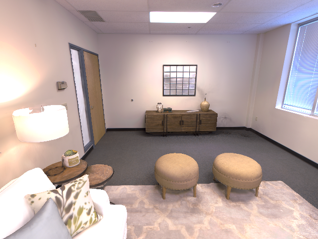
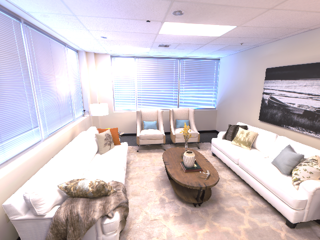

V1 Problem · Real scene prototype
V3 — real room_0 3DGS, calibrated input views, and 29-DoF G1 meshes.
15 s · auto-loop


01 · PROBLEM


A person captures a few viewsOne calibrated camera · sparse RGB observations


Robots consume different viewsDifferent positions, poses, viewpoints, visible surfaces, and occlusions
Review prototype only · formal Overview remains unchanged